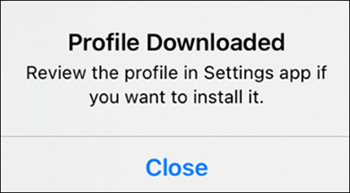

Setting Up the Flex Mobile App (PWA)
Use this procedure to set up a Flex mobile app client on a Desigo CC Server that is configured to support Mobile App clients.
Prerequisites
- The Desigo CC server must have outgoing internet access to https://fcm.googleapis.com and https://oauth2.googleapis.com.
- The Desigo CC server should already be configured to support Mobile app clients. See Setup Checklist for Mobile App.
Steps
- Installing the Certificate on the Mobile Device (Android or iOS)
- Installing and Launching the Flex Mobile App (PWA)
Installing the Certificate on the Mobile Device (Android or iOS)
The mobile device must recognize the root certificate that Desigo CC uses to connect to the Mobile app. To determine which certificate must be installed on the mobile device, see Check the Certificate Used by the Web Service Application.
- If a public CA host certificate is used, you do not need to install the certificate on the mobile device.
- If a private CA host certificate is used, you must obtain the corresponding root certificate file (.cer file) and install it on the mobile device. Without this, the Mobile app cannot connect to the Desigo CC server.
Installing the Certificate on an Android Mobile Device
- On an Android mobile device, go to Settings > ... > Lock Screen and make sure the screen lock is secured with a PIN or password. Do not use lower-security options such as swipe or pattern.
- Email the certificate to the mobile device.
- Download and save the certificate to the mobile device's internal storage.
- Go to Settings > ... > System Security > Credential storage > Install from device storage > CA Certificate. The exact path and labels may differ depending on the Android version.
- Tap Install anyway on the warning screen.
- Locate and tap the certificate from the mobile device.
- The certificate is installed, and the Mobile app can now connect to the Desigo CC server.
NOTE: On Android versions 10 and later, installing a non-publicly trusted certificate displays an alert (Network May Be Monitored by an Unknown Third Party) in the device notification area. It indicates that the device is using a trusted credential added by the user. - the certificate file to the iOS mobile device as an attachment.
- Download and save the certificate to the iOS mobile device.
- Open the certificate on the iOS device.
- Tap Close on the Profile Downloaded screen.

- Go to Settings > General > VPN & Device Management > Profile Downloaded.
- Tap Install on the Install Profile screen and enter the passcode if prompted.
- Tap Install on the Warning screen.
- Tap Done on the Profile Installed screen.
- The certificate is verified.
- For iOS 11.3 and later, go to Settings > General > About > Certificate Trust Settings and enable Mobile Root Certificate and tap Continue on the warning screen.
- The certificate is installed, and the Mobile app can now connect to the Desigo CC server.
Installing and Launching the Flex Mobile App (PWA)
- The necessary website port is open. For more information, see Configure Windows Defender Firewall Settings and Firewall Software.
- The Flex app is created in SMC and the mobile app URL is copied.
- On the mobile device, open a web browser and enter the Flex app URL.
- Perform any one of the following steps to install the mobile app:
- If the Install gms-application icon appears in the address bar, tap the icon and click Install.
- If the Install gms-application icon does not appear in the address bar,
tap the Menu icon (⋮ or ☰) in the browser and select Add to Home Screen > Install. - Launch Flex-App from the home screen.
NOTE: To receive push notifications correctly, you must log out of Desigo CC if you are already logged in via the mobile browser and then launch the Flex Mobile app from the home screen.
Removing the Certificate from a Mobile Device (Android or iOS)
- To remove the certificate from an Android device, go to Settings > ... > Security > Credential storage > Trusted certificates > User and uninstall the required certificate.
- To remove the certificate from an iOS device, go to Settings > General > Profiles and uninstall the required certificate.